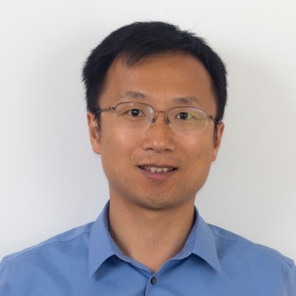

Mark Ren (Nvidia)
Title: Scaling Physical Design with Generative AI and Gradient-Based Methods on GPU
Bio
Haoxing (Mark) Ren is the Director of Design Automation Research at NVIDIA, focusing on leveraging machine learning and GPU-accelerated tools to enhance chip design quality and productivity. He has over 20 years of industrial EDA research and development experience at IBM and NVIDIA. He holds over thirty patents and has co-authored over 100 papers and books, including a book on ML for EDA and several book chapters in EDA. He received several prestigious awards for his work, including the IBM Corporate Award and best paper awards at ISPD, DAC, TCAD, MLCAD, and LAD. He serves in the organization and steering committees of international conferences such as ICCAD and ISPD and as the conference chair at ICLAD. He holds Bachelor's and Master's degrees from Shanghai Jiao Tong University and Rensselaer Polytechnic Institute, respectively, and earned his PhD from the University of Texas at Austin. He is a Fellow of the IEEE.